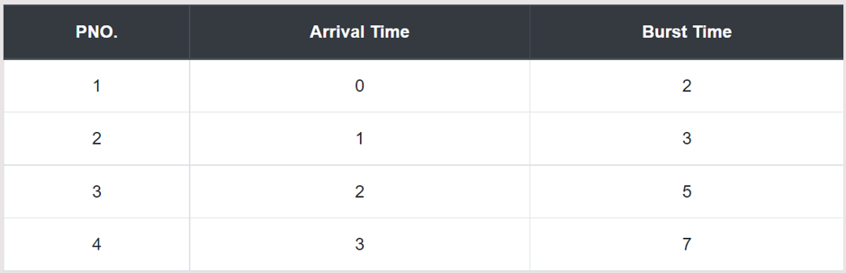

Longest Job First (LJF) is a non-preemptive scheduling algorithm. This algorithm is based upon the burst time of the processes. The processes are put into the ready queue based on their burst times i.e., in descending order of the burst times. As the name suggests this algorithm is based upon the fact that the process with the largest burst time is processed first. The burst time of only those processes is considered that have arrived in the system until that time.
Let's take an example of The (LJF) scheduling algorithm. In the Following schedule, there are 4 processes with process ID P1, P2, P3 and P4. P1 arrives at time 0, P2 at time 1, P3 at time 2 and P4 arrives at time 3 in the ready queue. The processes and their respective Arrival and Burst time are given in the following table.
Step 0) At time = 0, there is one process that is available having 2 units of burst time. So P1 is selected and executed for 2s.
Step 1) At time = 2 i.e. after P1 gets executed, The Available Processes are P2, P3. As you can see the burst time of P3 is more than P2. So, P3 is selected and executed for 5s.
Step 2) At time = 7 i.e. after the execution of P3, the Available Processes are P2, P4. As you can see the burst time of P4 is more than P2. So, P4 is selected and executed for 7s.
Step 3) Finally, after the completion of P4 process P2 is executed for 3s.
Step 4) Let's calculate the average waiting time for above example.
The Turnaround time and the waiting time are calculated by using the following formula.
Turn Around Time = Completion Time - Arrival Time Waiting Time = Turnaround time - Burst Time